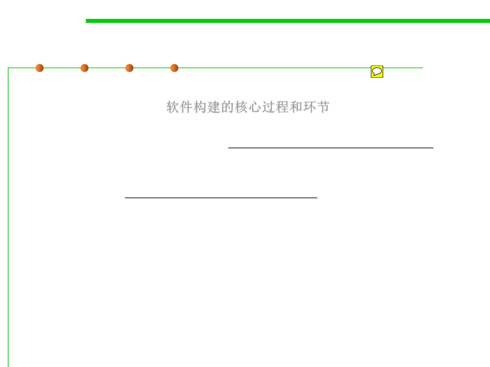

1.1 Multi-Dimensional Views of Software Construction
Build-time views of a software system
▪ Build-time: idea requirement design code installable /
executable package 软件构建的核心过程和环节
– Code-level view: source code ---- how source code are logically organized
by basic program blocks such as functions, classes, methods, interfaces,
etc, and the dependencies among them
– Component-level view: architecture ---- how source code are physically
organized by files, directories, packages, libraries, and the dependencies
among them
----------------------------------------------------------------
– Moment view: what do source code and component look like in a specific
time
– Period view: how do they evolve/change along with time